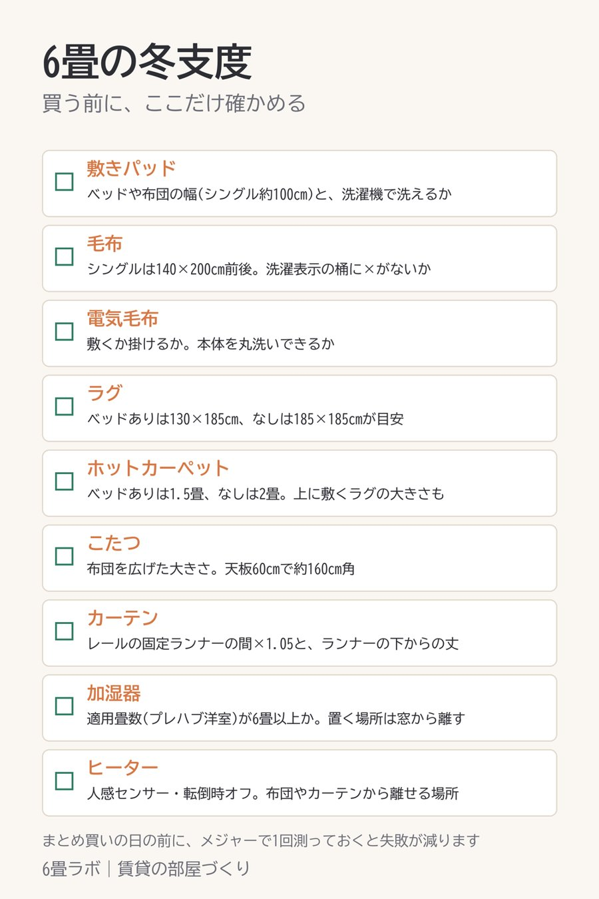

6畳の冬支度、買う前にここだけ測っておく
この記事には楽天アフィリエイトのリンクが含まれています。

冬の物をまとめて買う前に、メジャーで1回だけ測っておくと、届いてから困ることがだいぶ減ります。
冬の物は大きいものが多いので、6畳だと「思ったより大きかった」が起きやすいんですよね。特にラグやこたつ布団、カーテンは、届いてから合わないと分かっても返すのが大変です。
寝具は、ベッドや布団の幅が分かっていれば選べます。シングルなら100cm前後、毛布なら140×200cmくらいが合います。ラグはベッドがあるなら130×185cm、ないなら185×185cmが目安です。
こたつは天板ではなく、布団を広げた大きさで床を測ります。天板60cmの一人用でも、布団は160cm角くらいに広がります。カーテンは窓ではなくレールを測ります。
家電は大きさより置き場所です。加湿器は窓や壁から離した場所、ヒーターは布団やカーテンから離せる場所があるかを先に見ておくと安心です。
紹介した商品
- 【PR】冬用の敷きパッド(洗える・シングルから)(楽天市場)
- 【PR】洗える毛布(シングル・セミダブル・ダブル)(楽天市場)
- 【PR】敷き掛け両用で丸洗いできる電気毛布(楽天市場)
- 【PR】130×185cm・185×185cmがある洗えるラグ(楽天市場)
- 【PR】天板60×60cmの一人用こたつと布団のセット(楽天市場)
- 【PR】丈を1cm単位で頼める1級遮光カーテン(楽天市場)
- 【PR】タンク6Lのハイブリッド式加湿器(楽天市場)